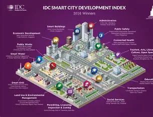
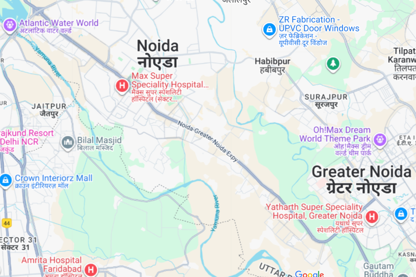

Parks Department
Maintaining green spaces, parks, and recreational facilities.
Maintaining green spaces, parks, and recreational facilities.
Public healthcare programs, hospitals, and emergency services.
Garbage collection, recycling programs, and cleanliness drives.

